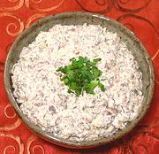

|
Mushroom CaviarRussia - Gribnaya Ikra | ||||
| Makes: Effort: Sched: DoAhead: |
2 cups ** 1-1/2 hrs Yes |
As it got expensive, Russians developed several delicious substitutes for caviar for use as toppings and spreads. This one is one of the best. | |||
|
12 3 1-1/2 3 3 1/3 1/4 pinch 2/3 ------- |
oz lrg T T T t t c --- |
Mushrooms (1) Scallions Lemon Juice Dill, fresh Butter Salt Pepper Cayenne (opt) Sour Cream (1) -- Garnish Parsley |
Now that Caspian and Black Sea sturgeon are so depleted, that only Vladimir Putin can afford sturgeon caviar (he is the 1% in Russia), these spreads come in quite handy. This one is absolutely delicious spread on black Riga rye. Prep - (30 min)
|